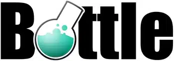
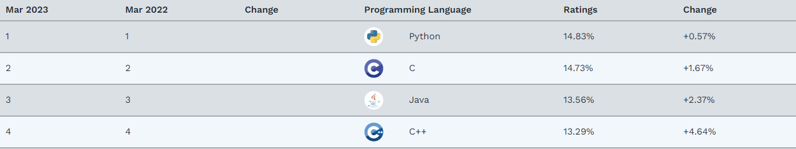

INTRO VEILLE
Tour d'abord la veille est constituée par l’ensemble des techniques visant à organiser de façon systématique la collecte, l’analyse, la diffusion de l’exploitation des informations techniques utiles à la sauvegarde et à la croissance des entreprises
Pour cette raison, la veille est un outil trés important dans un domaine aussi innovant que l'informatique car elle nous permet de se tenir à jour en nous alertant de toute nouveauté ou innovation. Ainsi on peut prender des décisions et agir en cohérance avec les nouvelles innovations ainsi que de les exploiter.
Qu'est-ce qu'un langage de programmation ?
Un langage de programmation est un langage informatique, permettant à un être humain d'écrire un code source qui s era analysé par une machine, généralement un ordinateur. Le code source subit ensuite une transformation ou une évaluation dans une forme exploitable par la machine, ce qui permet d'obtenir un programme.
PYTHON
Python est un langage de programmation dont la première version est sortie en 1991. Créé par Guido van Rossum, qui travaillait à cette époque au Centrum voor Wiskunde aux Pays-Bas, jusqu'à ce qu'il monte une organisation à but non lucratif, Python Software Foundation, créé en 2001. Python a été influencé par des langages tels que : ABC, C, Eiffel, Icon, Modula-3, Java, Perl. Et il a influencé la création d'autres langages comme : Ruby, Groovy et Boo.
Les avantages de Python
- Pas besoin d'initialiser les variables
- Facilité d'exploitation des variables
- Python en perpétuelle évolution
- Il existe toutes sortes de module permettant d'augmenter les fonctionnalités de Python
- Programmation orienté objet, fonctionnelle, avec interface graphique
- Langage trés intuitif et facil a prendre en main
- Langage universel
Il permet de réaliser tout type de projet avec un niveau d’exigence élevé, par exemple :
- créer et administrer un site Web
- développer des logiciels et des applications, aussi bien pour ordinateur que pour téléphone
- automatiser des scripts systèmes et des interactions ordinateur – navigateur Web.
C’est pourquoi de grandes entreprises comme Google, la Nasa, Microsoft ou Instagram utilisent Python. En particulier, le langage Python est un incontournable de la Data Science car il permet de :
- Aspirer des données du web, en utilisant les fonctionnalités de web-scraping de Python.
- Rédiger des scripts permettant de nettoyer et d’analyser une base de données.
- Visualiser les résultats sous forme graphique, en utilisant les fonctionnalités de datavisualisation de Python.
- Se connecter à des services web, en réalisant une API REST avec Python.
Si Python est utilisable dans autant de domaines, c’est grâce à la richesse de ses bibliothèques
Une bibliothèque Python regroupe en un même endroit des fonctions qui ont une thématique commune. Ces fonctions n’existent pas dans le pack originel Python, mais elles ont été codées par des développeurs qui ont mis leur travail en open-source.
Les bibliothèques Python les plus utilisées par les Data Analyst sont :
- Pnadas qui permet de manipuler et d’analyser des tables de données.
- NumPy qui permet d’effectuer des calculs scientifiques (en particulier statistiques et probabilistiques).
- Scikit-Learn et Tensorflow qui aident au développement de modèles de Machine Learning et de Deep Learning.
- Scrapy et BeautifoulSoup qui permettent d’extraire des données directement depuis le Web.
- Seaborn et Matplotlib ui aident à la visualisation de données, en proposant notamment des outils de construction de graphiques.
Frameworks Python
Un framework est une collection de modules et de packages utilisés pour développer des logiciels et aider les développeurs à éviter de devoir prendre en charge les détails de bas niveau.
1.

Django est un framework web gratuit et open source qui permet le développement sur Python de sites et d’applications web dynamiques de façon simple et rapide. Il est adapté à de nombreux domaines et orienté vers la création rapide et efficace d’applications. Largement utilisé par les développeurs, il est tout indiqué pour les professionnels. Il permet de se concentrer sur le cœur des projets en fournissant une boîte à outils solide et complète visant à faciliter le travail. Parmi les fonctionnalités de Django, on peut citer l’authentification, le routage d’URL, le moteur de modèles, l’ORM (Object Relationnal Mapper) et la migration de schémas de bases de données (Django v.1.7+). Ces caractéristiques font de Django un outil très évolutif et polyvalent. https://www.djangoproject.com/
2.
TurboGears est un framework d’application web open source, construit sur de nombreux intergiciels et de nombreuses bibliothèques et a été initialement conçu pour combiner les meilleurs composants des autres frameworks Python.
Quelques caractéristiques distinctives de TurboGears :
- Prise en charge des bases de données multiples
- Architecture de type MVC
- Intégration de la bibliothèque JavaScript MochiKit
- Outils en ligne de commande
3.
Microframework initialement destiné à la construction d’API, Bottle implémente tout dans un seul fichier source. Il n’a pas de dépendances, à part la Python Standard Library.
Il ne convient que si vous créez une très petite application avec au maximum 500 lignes de code et sans exigences particulières.
caractéristiques:
- Routage – prend en charge les demandes de mappage d’appel de fonction, vous permettant d’obtenir des URL propres et dynamiques
- Utilitaires – accès confortable aux données des formulaires, aux téléchargements de fichiers, aux cookies, aux en-têtes et autres métadonnées liées à HTTP
- Serveur – un serveur de développement HTTP intégré qui prend en charge fapws3, bjoern, GAE, СherryPy, et tout autre serveur HTTP compatible WSGI
Bien conscient qu’il existe une foule d’autre framework, cette liste présente quelques-uns des framesworks/microframeworks les plus connus et répandus à travers le monde.
Aujourd’hui, Python est devenu un langage très populaire, au point que même Le classement Tiobe, qui recense les langages les plus populaires et fait autorité dans le monde de la programmation, place Python en première place depuis décembre 2021 !
